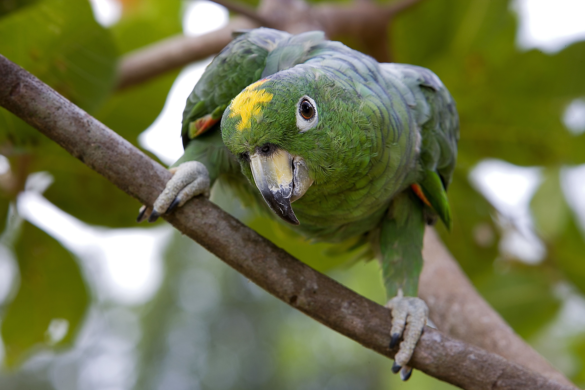

A papagájok lenyűgöző, intelligens és színpompás madarak, akik sokak számára nemcsak háziállatok, hanem igazi családtagok is.
Ezt a weboldalt azért hoztam létre, hogy bemutassam ezt a csodálatos madárcsoportot, megosszam a róluk szóló érdekességeket, gondozási tanácsokat és inspiráló képeket.
Célom, hogy a papagájrajongók egy közös platformot találjanak, ahol tanulhatnak, tájékozódhatnak és jobban megérthetik ezeket a különleges élőlényeket.
